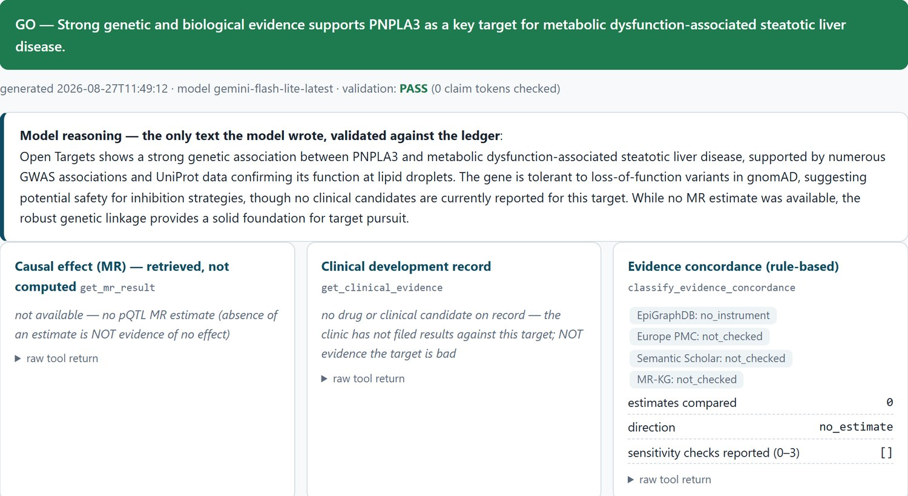
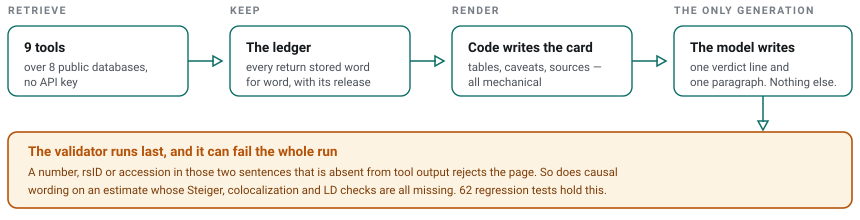
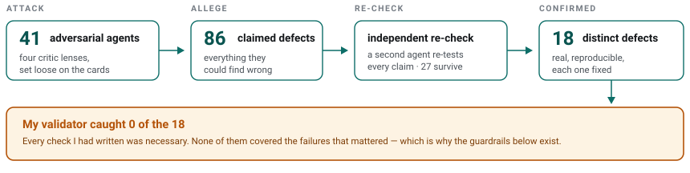
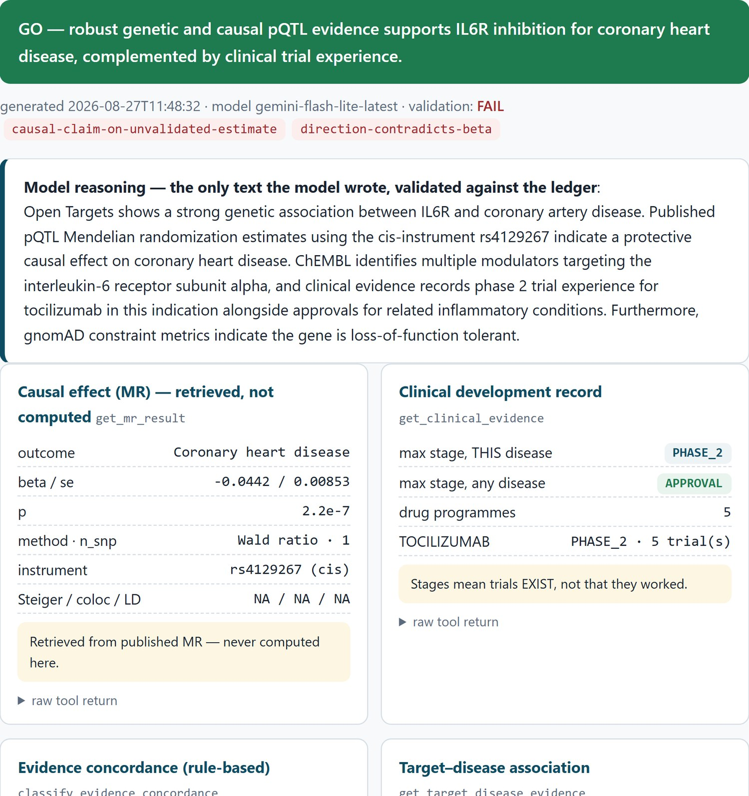

Building an AI agent that can’t fake drug-target evidence
The most dangerous failure was not a made-up number. It was a correct answer that nothing the agent had retrieved supported — every check came back clean, and every expert who read it nodded. This is how I learned to catch it.
What this agent does, and why people want AI to do it
The job is target prioritization. Before anyone commits years to a drug target, somebody has to read what is already known about it — the genetics, the variants, the chemistry, the trials already run — and rank it against the alternatives. That reading takes a trained person about a day per target, and there are thousands of targets. It is exactly the work people now hand to an LLM agent: cheap labour that never gets bored.
A wrong call is expensive. About nine in ten programmes that reach the clinic never reach approval, and genetic support is one of the few things known to move that number — targets that have it are roughly 2.6× likelier to succeed (Minikel et al., Nature 2024). So prioritization is a decision, not a summarising task.
This is why hallucination is dangerous here. A model asked this question answers fluently whether or not it has grounds to. Cheap labour that invents its evidence is not cheap: a confident wrong sentence does not cost you a wrong answer; it costs a multi-year programme. So I built the agent, and then spent most of the summer trying to make it fail.
- The failure that mattered was not a hallucination. It was a true sentence that nothing the pipeline had retrieved supported.
- My guardrails caught none of it: 41 adversarial agents surfaced 18 real defects, and my validator's recall against them was zero.
- A high pass rate turned out to measure caution, not accuracy — the model learned to pass by asserting almost nothing.
- The check I built afterwards caught the same failure twice, on twenty target–indication pairs whose outcomes history had already settled.
- The pathway that card backed then failed its phase 3 trial this year. The remembered answer was not just unsupported — it did not even stay true.
What I learned
- "The model was right" is not the same as "the pipeline supported it." Track the second one, because the first will keep being true until it suddenly isn't, and you will have built no way to notice.
- An estimate existing is not an estimate being validated. If your sources carry sanity checks, make the language your system is allowed to use depend on them.
- Ask what your measurement is actually measuring. For plasma proteins the answer is often "reagent binding, filtered through shedding and clearance" — and the class is something you can read off the annotations you already have.
- Report how much was checkable, not just how much passed. A pass rate without claim density measures caution, not accuracy.
- Attack your own guardrails before trusting them. I would have shipped mine with a clean conscience. Recall 0/18 is not a number you discover by staring at your own code.
What it ships
One command — a protein and a disease — returns one evidence card. The verdict banner and one paragraph are the model’s; the validation line, every table and every number are written by code from stored tool returns. Each panel names the database release it came from.

Every card in this post is live and needs no account or key. Open the card viewer and pick IL6R × coronary heart disease from the list — the validation banner, the raw tool returns behind each panel, and the database release each number came from are all there.
There are also 991 pre-generated protein dossiers, and the code.
How it works: the model writes as little as possible
Nine tools, eight public databases, no API key. Each one answers a different part of the question a reviewer would ask, and each is a separate call whose return is kept:
MR — Mendelian randomization — uses genetic variants as natural experiments to ask whether a molecule causes a disease rather than tracking it. It is the only one of the nine that speaks to causality, which is why most of this post is about it.
Nine good sources do nothing on their own. The model still has to turn them into a page, and that is the step where it can write past them — so the design gives the model as little of that step as possible.
Tool outputs are captured verbatim. The evidence table, the caveats, the sources and the provenance footer are rendered mechanically from them. The model writes exactly two things: a one-line verdict and a short reasoning paragraph. A validator then rejects the run if that prose contains a number, an rsID or an identifier that appears nowhere in the tool output.

How hard it was attacked
Every version of this system has been shipped, attacked, and shipped again. The attack that mattered used 41 adversarial agents across four critic lenses, with every claim re-checked by an independent second agent before it counted: 86 claimed, 27 survived the re-check, and 18 were confirmed as distinct defects.

My validator's recall against those 18 was zero. Every check I had written was necessary, and none of them covered the failures that mattered.
Everything below is the engineering story behind those numbers — the failure that taught me the most, the fix, and the external test. It is for the reader who wants the details; the conclusions above stand on their own.
The case: IL6R × coronary heart disease
For IL6R × coronary heart disease, the MR tool returned:
beta -0.0441899892357374
se 0.00853005023322569
p 2.21e-07
method Wald ratio n_snp 1
instrument rs4129267 cis
steiger_direction_ok NA
coloc_prob null
ld_check nullThe card quoted that correctly, and concluded:
GO — genetic and Mendelian randomization evidence supports a causal, protective role of IL6R inhibition in coronary heart disease.
My first reading was that this was backwards. The exposure in that resource is plasma IL6R protein level. A negative beta says genetically higher IL6R protein goes with less coronary heart disease — so, I reasoned, the data supports a claim about raising the target, and the card recommended inhibiting it.
That reading was wrong, and the way it was wrong is the point of this post.
Why the card was right
The resolution is one piece of biology, and it takes four steps.
- The genetic variant behind this estimate — rs4129267, a near-perfect stand-in (r² ≈ 0.96–0.99 in Europeans) for the missense variant rs2228145 — changes the IL-6 receptor so that it is more easily cut off the cell surface. The cutting is done by an enzyme (ADAM17), and the process is called shedding.
- The cut-off piece drifts in the blood — and that drifting piece is what the plasma assay measures. So people who carry the variant show more IL6R protein in a blood test.
- But with receptors cut off the surface, their cells receive less IL-6 signal. Less IL-6 signalling means less inflammation, and the carriers have less coronary heart disease.
- Put together: in this dataset, high IL6R in plasma does not mean more IL6R at work. It means the opposite — it is the debris of receptors that no longer signal. A drug that blocks this receptor (tocilizumab) pushes in the same protective direction the variant does.
So the card’s conclusion — inhibiting IL6R protects against coronary heart disease — was right, and my “backwards” reading was wrong. I had treated the blood measurement as if it tracked receptor activity, when it actually tracks the loss of it.
Here is the problem: none of that biology was in anything the agent retrieved. The tool returned a beta, a p-value and an instrument — the code block above is the whole of it. The four steps came from the model’s memory of its training data, and they happened to be correct.
That is the failure mode I now worry about most: not a hallucinated fact, but a correct conclusion that the retrieval does not support. A domain expert skimming the card nods, because the sentence is true. The reviewer fills the gap from their own memory, exactly as the model did, and the reader's own expertise hides the pipeline's silence.
Next time the remembered answer will be stale, or wrong, or right for a different protein, and nothing in the system will be able to tell the difference.
The part I could measure
Two cards in the same batch, same outcome, same tool:
IL6R beta -0.0442 p 2.21e-07 n_snp 1 steiger NA ld_check null coloc null
LPA beta +0.2523 p 5.39e-39 n_snp 1 steiger TRUE ld_check 1.0 coloc nullLPA's estimate passed a Steiger direction test and an LD check. IL6R's passed neither, and has no colocalization either. A one-SNP Wald ratio with none of those three cannot distinguish a causal effect from linkage disequilibrium with a neighbouring gene, or from reverse causation.
Both cards used the same strength of language — "Supports a causal role", in both.
That is a defect you can encode, so I did. The validator now fails any run that uses causal wording on a single-instrument estimate whose Steiger, colocalization and LD check are all absent. When I re-ran the benchmark, it fired on exactly the card it was built for — and notice which way the model moved: more confident this time, not less:
| verdict | result | |
|---|---|---|
| before | "genetic and causal evidence support IL6R as a promising target" | passed |
| after | "…indicate a causal and safe target for coronary heart disease" | failed |

validation: FAIL, and names why:
causal-claim-on-unvalidated-estimate and direction-contradicts-beta.
Three rows down, Steiger / coloc / LD reads NA / NA / NA. That is
the check catching the exact card it was written for.I also had to be careful about the rule itself. An early version of the direction check rejected a sentence that was correct. A check that punishes you for being precise just teaches you to be vague, which is the opposite of what any of this is for.
Why a perfect pass rate meant nothing
Ten of ten cards passed validation. I nearly wrote that number down as progress.
Then I counted what was left to check: three checkable tokens in the whole batch. The model had learned that the safe move is to stop making claims that can be checked. It passed everything by asserting almost nothing.
Later I made the validator stricter, and the same benchmark dropped to 8/10 — both failures were the model asserting clinical status ("clinically proven", "approved") that none of the retrieved sources returns. A pass rate that falls when the check gets honest is what progress actually looks like.
So the pipeline now reports claim density — checkable tokens per 100 words of reasoning — beside the pass rate. Neither means much alone; together they answer the real question: how much did it claim, and how much of that held up? The run as this was written: 8/10 passed, 2 checkable tokens across 842 words, 0.20 per 100 words. That is worse than the run before it, and reporting it is the point.
Tested on data I did not pick
The benchmark run described here is from 21 August 2026.
The failure this post is about — the model supplying from memory what retrieval did not give it — is one I could not catch when I wrote this. So I built a check for it, and then went looking for it somewhere I had not chosen the data.
I scored the agent against twenty target–indication pairs sampled from Minikel et al., Nature 2024: ten drugs that launched, ten programmes that died at phase II/III. History supplies the labels, not me. I withheld the clinical-evidence tool, because it reports approval stages directly and would hand the agent the answer.
On two of the twenty cards the validator caught the model importing knowledge it had not retrieved, and failed the run. One card asserted that a target had "multiple approved inhibitors" — true, and nowhere in what the pipeline had fetched. That is the IL6R failure again, and this time the system noticed instead of me.
The verdicts themselves held up better than I expected: every GO the agent issued was a drug that launched, and it backed none of the ten failures. I am not claiming that as a result — n is twenty, and an audit of the run showed part of that precision rides on residual clinical signal inside an association score rather than on genetics alone. I am claiming something smaller and, to me, more useful: every error was a refusal to answer, never a wrong answer. When the evidence was thin, the agent said “not enough” instead of guessing.
The pharmacology was right, and it still did not work
Everything above turns on one move — the model reached past what it had retrieved, supplied the shedding biology from memory, and was correct. I have been treating that as a near miss: right this time, wrong eventually.
It is worse than that, and the timeline below is what happened to the pathway that card backed.
![A timeline of the IL6R pathway to ziltivekimab, labelled prediction not confirmed in ASCVD and CKD — target engaged, zero MACE benefit. 2012: back-to-back Lancet Mendelian randomization papers report that an IL6R variant lowers coronary heart disease risk, odds ratio 0.95 per allele. 2017: CANTOS shows that blocking upstream IL-1-beta works. 2021: the RESCUE phase 2 trial shows dose-dependent hsCRP lowering. 2026: the ZEUS phase 3 trial misses its primary endpoint, with a MACE hazard ratio of 0.99, announced by press release.](../../assets/blog/il6r-timeline-narrow.jpg)
Two caveats keep this a finding rather than a headline. Ziltivekimab targets IL-6, the ligand — one step upstream of the receptor the card was actually about — and ZEUS enrolled patients with atherosclerotic disease and chronic kidney disease, not the general coronary population the MR estimate describes. And a missed endpoint announced by press release is not a published trial. So this is evidence against the pathway, not proof that the card was wrong.
But it is enough to make the point sharper than I could when I first drafted this. The remembered answer was not merely unsupported by the retrieval — it did not even stay true. The mechanism was real, the target was engaged, hsCRP fell exactly as the biology said it should — and the outcome did not move. If the field's own consensus can be that far from the trial result, then a pipeline that stays silent and lets the reader fill the gap from memory is not borrowing a safe fact. It is borrowing a bet.
That is the whole argument for making the silence visible. A card that prints
Steiger / coloc / LD → NA / NA / NA and refuses the causal sentence is not being pedantic; it is declining to make that bet on the reader's behalf.
The code, the 62 regression tests and the audit are open, in the repo built during the CABS 2026 data science internship. The MR estimates throughout are retrieved: the exposure side comes from EpiGraphDB's pQTL resource (Zheng et al., Nature Genetics 2020) and the outcome side from separate published GWAS. This agent computes no causal inference of its own, which is exactly why getting the interpretation right matters so much.
Thanks to the CABS 2026 cohort for the arguments that shaped this — including the one that made me go back and check whether the sign was really inverted at all.